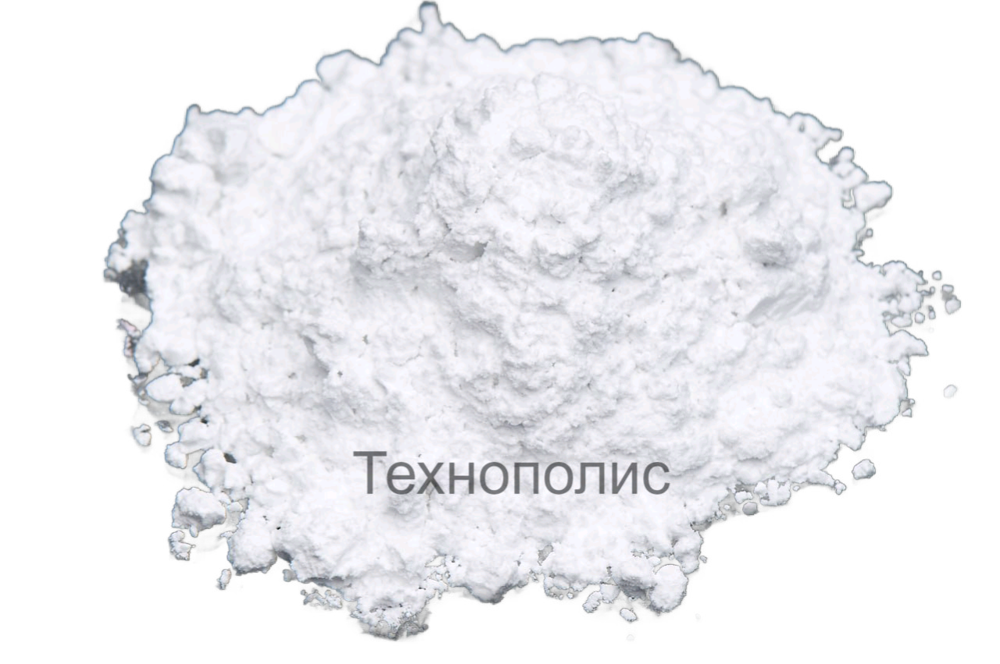
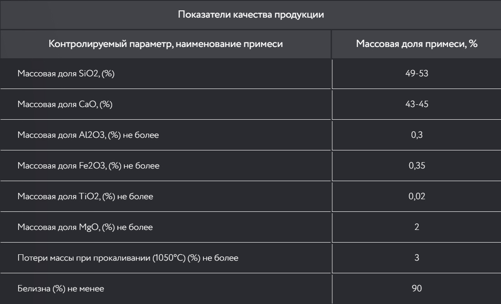

Волластонит

Волластонит – природный силикат кальция с химической формулой Ca3Si3O9, единственный чисто белый природный минерал, имеющий игольчатую структуру кристаллов. Волластонит широко применяют в керамической промышленности (глазурь, керамическая масса, фритт), использование волластонита в лакокрасочной промышленности, композиционных полимерах, металлургии, и так же производстве огнеупорных материалов.
Физико-химические характеристики Волластонита
